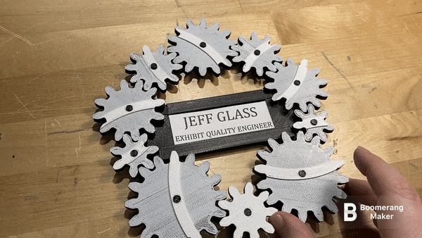

Geared Nameplate
A quickie today - over the weekend, I decided that my workshop at work needed a nameplate outside the door, to make it a little easier for folks to find me. So I put together this design in Fusion 360, and printed it in black and white PLA+. (The "grey" of the gears is a single later of white PLA on top of black gears).

The gears have 8, 9, 10, 12, 14, and 16 teeth, and are symmetrical left/right. This means that it takes 630 revolutions of the smallest gear to return the arrangement to its starting place. We determine this by finding the least common multiple of the number of teeth, which is or 5040. Divide that by the 8 teeth on the smallest gear, and we get our 630 revolutions to return to where we started.
The design has two chamferred holes for screw-mounting, but it's currently just stuck on the wall with sticky-tack.